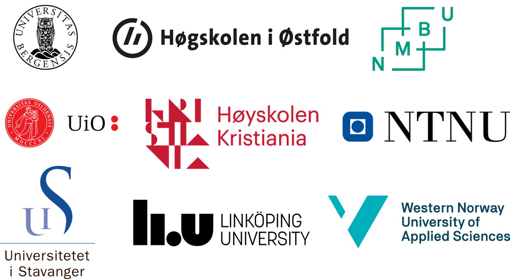

Nasjonal Forkunnskapstest i Programmering

Hva kan studentene før de begynner å studere?

Studenter starter studiet med 3+ års programmeringserfaring
Fra 2023 av begynner studentene høyere utdanning med programmeringserfaring fra obligatoriske fag i barneskole og videregående. Dette kan ha store konsekvenser for hvordan programmering undervises på universitet og høyskoler.
Med kunnskapsløftet 2020 ble programmering en del av pensum for alle videregåendeelever ved studiespesialisering. Nå tre år senere begynte det første kullet med denne programmeringserfaringen høyere utdanning. Hva er det de allerede kan? I hvor stor grad må kursene tilpasse sin undervisning? Finnes det studenter som rett og slett ikke trenger Introduksjon til programmering?
For å kunne besvare disse spørsmålene avholdte vi Nasjonal Forkunnskapstest i Programmering. Testens hovedhensikt var å evaluere studentenes programmeringskompetanse. Hva er det de lærer og hvor godt kan de de forskjellige konseptene man finner i introduksjonskursene i høyere utdanning? Testen ble avholdt ved 7 universitet og høyskoler i Norge. En detaljert rapport med resultatene finnes i sidefeltet.
Dette prosjektet vil avholdes vært eneste år fremover. Ønsker du og din institusjon å delta? Påmelding finnes i sidefelt!

Hovedresultat fra høst 2023
I august 2023 ble første iterasjon av forkunnskapstesten utført i Norge. Resultatene indikerer at den generelle programmeringskompetansen i befolkningen vil øke betydelig i de neste 10 årene.
Testen ble gjennomført av 2 093 studenter ved syv ulike høyere utdanningsinstitusjoner i Norge. Dette resulterte i en gjennomsnittlig score på 46,1%, med den følgende fordelingen:

Denne fordelingen avslører to tydelige topper, der flertallet av studentene scorer rundt 7,5. I tillegg er det en gruppe høyt presterende studenter som har scoret 19 poeng eller mer. Studentenes akademiske bakgrunn viste betydelige variasjoner til deres prestasjoner. Som forventet ble en betydelig faktor som bidro til variasjonen i scorene hvorvidt de fullførte videregående i 2023 (lærte programmering) eller fullførte i tidligere år (lærte ikke programmering). Denne oppdelingen avslørte en betydelig forskjell, der uteksaminerte i 2023 oppnådde en gjennomsnittsscore på 63,3%, mens de fra tidligere år oppnådde en gjennomsnittsscore på 39,4% (se fordeling i sidefeltet).
Da en betydelig andel av studentgruppen befinner seg på den nedre delen av fordelingen, konkluderer vi med at det ikke er nødvendig med omfattende endringer i måten programmering undervises på i høyere utdanning. Mange studenter vil fremdeles ha behov for en grundig gjennomgang av de fleste delene av det nåværende pensumet. Samtidig identifiserer vi en betydelig mengde høytpresterende studenter med 19 poeng eller mer. Dette reiser spørsmålet om disse studentene trenger å ta kurset Introduksjon til Programmering? Kan vi gi disse studentene muligheten til å hoppe over dette emnet og heller la de fokusere på mer avanserte kurs?
Det er høyst sannsynlig at kompetansen til innkommende studentener vil øke videre de neste årene. I 2023 hadde studentene kun tre år med programmering fra videregående, men i 2024 vil de også ha hatt programmering i 10. klasse. Denne økningen i erfaring vil fortsette:
- 2025: Erfaring siden 9. klasse
- 2026: Erfaring siden 8. klasse
- 2029: Erfaring siden 5. klasse
- 2030: Erfaring siden 4. klasse
- 2032: Erfaring siden 2. klasse

Hva læres på grunnskole og videregående?
Algoritmisk tenkning og programmering er nå del av læreplanmålene så tidlig som 2. klasse og følger elevene ut VG3.
- 2. trinn: Lage og følge regler og trinnvise instruksjoner i lek og spill
- 4. trinn: Lage algoritmer og uttrykke dem ved bruk av variabler, vilkår og løkker
- 5. trinn: Lage og programmere algoritmer med bruk av variabler, vilkår og løkker
- 8. trinn: Utforske hvordan algoritmer kan skapes, testes og forbedres ved hjelp av programmering
- 9. trinn: Simulere utfall i tilfeldige forsøk og beregne sannsynligheten for at noe skal inntreffe ved å bruke programmering
- 10. trinn: Utforske matematiske egenskaper og sammenhenger ved å bruke programmering
- 1T: Formulere og løse problemer ved hjelp av algoritmisk tenking, ulike problemløsningsstrategier, digitale verktøy og programmering
- S2 og R2: Utforske rekursive sammenhenger ved å bruke programmering og presentere egne framgangsmåter
Høsten 2022 ble blant annet følgende programmeringsoppgaver gitt på eksamen i 1T og R1:


Mye av det elevene i VGS allerede har lært finner vi et stykke ut i semesteret i introduksjonskursene i høyere utdanning. Vil pensum i programmeringskursene på universitet og høyskoler måtte endres på grunn av denne nye kunnskapen?
Resultat fra 2023
Nasjonal Forkunnskapstest i Programmering - Rapport 2023
- Hvor kompetente er de nye studentene?
- Hvordan sammenligner de seg med studenter fra den tidligere læreplanen?
- Hva er det de lærer? Hvor godt presterer de i de forskjellige programmeringskonseptene?
- Hva er konsekvensene for undervisningen av programmering i høyere utdanning?
Hva er forskjellen?

Her ser vi forskjellen på studentene som har hatt programmering på videregående (2023) sammenlignet med de som hadde den gamle lærerplanen (Pre 2023). Disse resultatene indikerer at de nye studentene er mer kompetent en noen gang før.
Deltagelse
Ønsker du og din instutisjon å delta i dette prosjektet? Vi inviterer til deltagelse i utarbeidelse og utførelse av Nasjonal Forkunnskapstest i Programmering
Meld din interesse her: